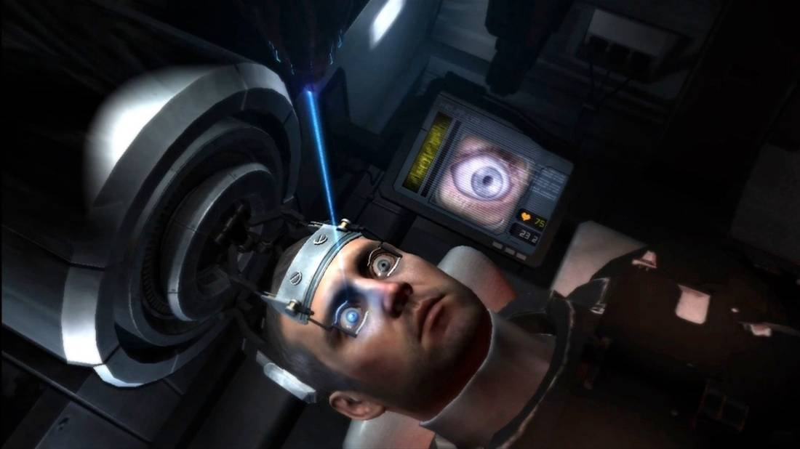
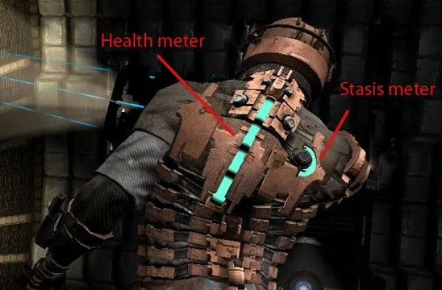
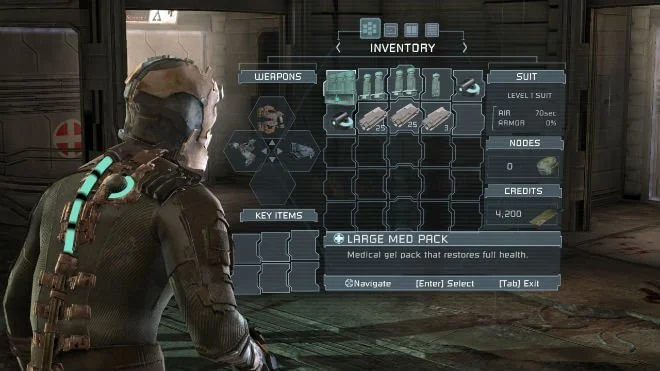
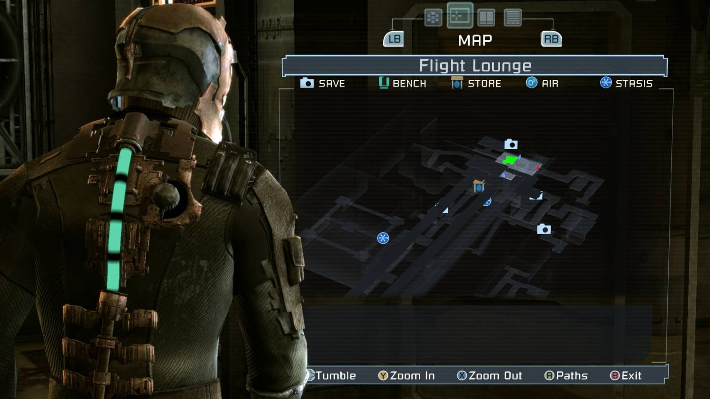
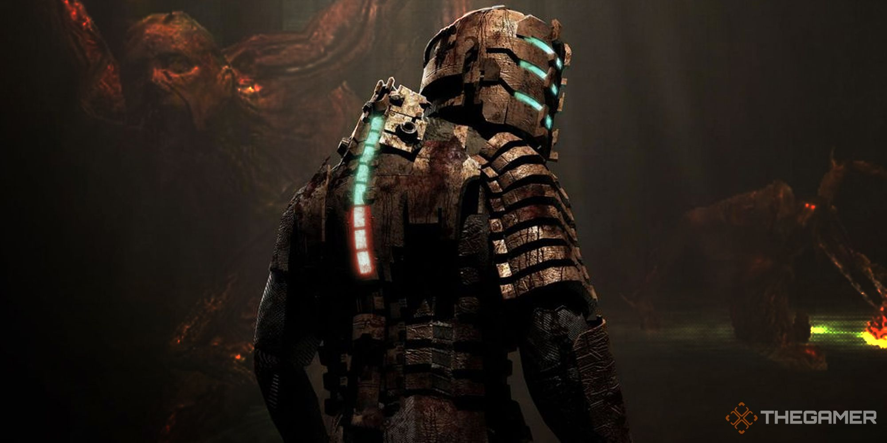
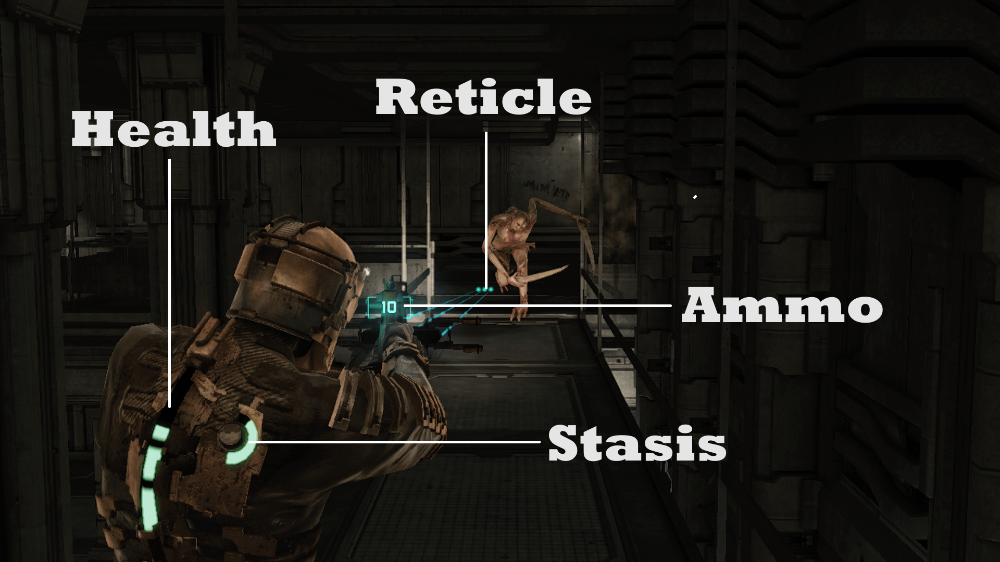
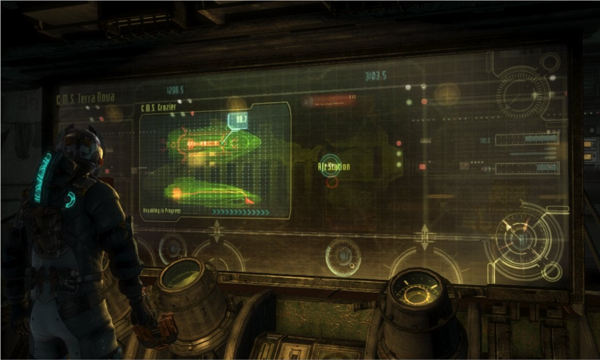

Clawmachine-fit: S. The gold standard for 'HUD is the character's world'. Not aesthetically retro, but philosophically aligned: no chrome sitting on top, UI lives in-world. Blue/white holograms, thin weights.






